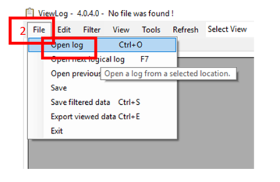
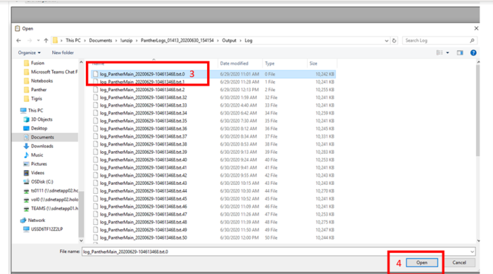
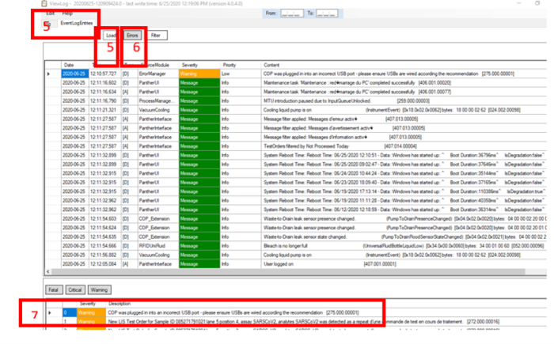
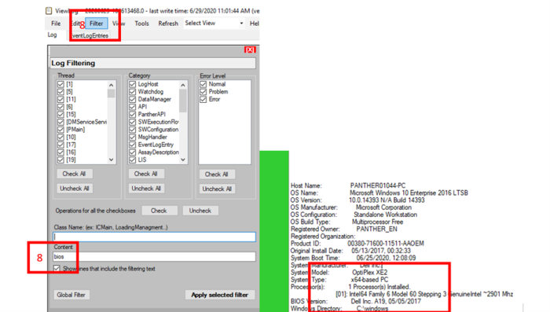
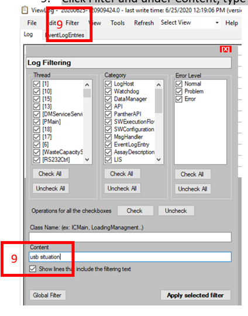

SW 7.1 - USB situation/communication failure/instrument response delay
Three Error Types Seen:
- COP, no reply after 20 retries.
- Failed to get instrument state after 35 seconds.
- Sendblock error after 35 seconds.
These should hopefully all be fixed by the new Silabs driver that is releasing with 7.2. Replacing the cable at this point is something that could potentially resolve the issue as well. Refer to CBL-03106.
Stratec components are labeled with VID_18AC. The FSE Field Service Engineer. will want to ensure that All Stratec components are on a single USB bus address with all other components on the other USB bus address.
Field Service Engineer. will want to ensure that All Stratec components are on a single USB bus address with all other components on the other USB bus address.
What is shown below is only an example. Each instrument may look slightly different.

|
Note—This only applies to System Software v7, Windows 10 and not previous software versions. |
When Troubleshooting Any of the Following:
- Slow software
- Database issues
- 269.000.00003 Instrument response delay
- 269.000.00002 Lost Communication with instrument
- All Logs
Different flavors of Viewlog messages (must open Viewlog, these messages not shown in Messages).
- 275.000.00000 - USB controller configuration was not recognized or is not expected <- Haven’t run into this message yet.
- 275.000.00001 - COP was plugged in into an incorrect USB port - please ensure USBs are wired according the recommendation <- COP not on the expected bus address.
- 275.000.00002 - Unexpected device was found on USB controller dedicated for the COP(s) - please ensure USBs are wired according the recommendation <- Another device is on the bus dedicated for COPs.
|
|
Note—XE2 PCs must be on BIOS version A07 for two USB buses to be available. |
|
|
Note—XE3 PCs can incorrectly display 275.000.00001. The USB Situation entry must be analyzed to confirm the configuration is correct. |
Steps
- Open Viewlog.
- Click File > Open log.

- Select latest .txt.0 file (log_Panther MainXXXXXX.txt.0).
- Click Open.

- Click on Even Log Entries tab and click Load button.
- Click Errors button.
- Double-click on USB error message OR any fatal message (examples above).

- Click Filter and under Content, type “bios”.
- This provides the BIOS Version.
- XE2 must be on A07 BIOS version according to TB-01507.
- This provides the System Model (XE2 or XE3).

- Click Filter and under Content, type “usb situation”.

|
|
Note—XE2 PCs must be on BIOS version A07 for two USB buses to be available. |
|
|
Note—XE3 PCs can incorrectly display 275.000.00001. The USB Situation entry must be analyzed to confirm the configuration is correct. |
Stratec components are labeled with VID_18AC. The FSE will want to ensure that All Stratec components are on a single USB bus address with all other components on the other USB bus address.
The order has been modified within the entry to make it easier to read.
What is shown below is only an example. Each instrument may look slightly different.
XE3 Correct Configuration
USB Situation:
Name: USB Composite Device, ID:USB\VID_03F0&PID_7312, Path: PCIROOT(0)#PCI(1400)#USBROOT(0)#USB(10), Location: Port_#0010.Hub_#0001
Name: USB Input Device, ID:USB\VID_04F3&PID_0732, Path: PCIROOT(0)#PCI(1400)#USBROOT(0)#USB(12), Location: Port_#0012.Hub_#0001
Name: Radium TC USB, ID:USB\VID_04D8&PID_F582, Path: PCIROOT(0)#PCI(1400)#USBROOT(0)#USB(1), Location: Port_#0001.Hub_#0001 <- Fusion Thermocycler
Name: USB Input Device, ID:USB\VID_04D9&PID_A01C, Path: PCIROOT(0)#PCI(1400)#USBROOT(0)#USB(5)#USB(2)#USBMI(1), Location: 0000.0014.0000.005.002.000.000.000.000
Name: USB Input Device, ID:USB\VID_04D9&PID_A01C, Path: PCIROOT(0)#PCI(1400)#USBROOT(0)#USB(5)#USB(2)#USBMI(0), Location: 0000.0014.0000.005.002.000.000.000.000
Name: USB Input Device, ID:USB\VID_1FBB&PID_3681, Path: PCIROOT(0)#PCI(1400)#USBROOT(0)#USB(5)#USB(4), Location: Port_#0004.Hub_#0003
Name: Generic USB Hub, ID:USB\VID_0424&PID_2514, Path: PCIROOT(0)#PCI(1400)#USBROOT(0)#USB(5), Location: Port_#0005.Hub_#0001
Name: USB Composite Device, ID:USB\VID_04D9&PID_A01C, Path: PCIROOT(0)#PCI(1400)#USBROOT(0)#USB(5)#USB(2), Location: Port_#0002.Hub_#0003
Name: USB Printing Support, ID:USB\VID_03F0&PID_7312, Path: PCIROOT(0)#PCI(1400)#USBROOT(0)#USB(10)#USBMI(0), Location: 0000.0014.0000.010.000.000.000.000.000
Name: HP Officejet Pro 6230(REST), ID:USB\VID_03F0&PID_7312, Path: PCIROOT(0)#PCI(1400)#USBROOT(0)#USB(10)#USBMI(1), Location: 0000.0014.0000.010.000.000.000.000.000
Name: MGE USB UPS, ID:USB\VID_0463&PID_FFFF, Path: PCIROOT(0)#PCI(1400)#USBROOT(0)#USB(8), Location: Port_#0008.Hub_#0001
Name: Realtek USB GbE Family Controller, ID:USB\VID_0BDA&PID_8153, Path: PCIROOT(0)#PCI(0100)#PCI(0000)#USBROOT(0)#USB(1), Location: Port_#0001.Hub_#0002 <- USB PCI card in XE3
Name: Panther, ID:USB\VID_18AC&PID_082A, Path: PCIROOT(0)#PCI(0100)#PCI(0000)#USBROOT(0)#USB(7), Location: Port_#0007.Hub_#0002 <- Panther COP
Name: USB Input Device, ID:USB\VID_18AC&PID_26A3, Path: PCIROOT(0)#PCI(0100)#PCI(0000)#USBROOT(0)#USB(8), Location: Port_#0008.Hub_#0002 <- Fusion COP
|
|
Note—Depending on the physical PCI card configuration, either 0100 or 1D00 will be the address of the USB PCI card in XE3 PCs. |
XE2 Correct Configuration
USB Situation:
Name: USB Printing Support, ID:USB\VID_03F0&PID_7312, Path: PCIROOT(0)#PCI(1D00)#USBROOT(0)#USB(1)#USB(4)#USB(3)#USBMI(0), Location: 0000.001d.0000.001.004.003.000.000.000
Name: Radium TC USB, ID:USB\VID_04D8&PID_F582, Path: PCIROOT(0)#PCI(1D00)#USBROOT(0)#USB(1)#USB(5), Location: Port_#0005.Hub_#0005<- Fusion thermocycler
Name: USB Composite Device, ID:USB\VID_03F0&PID_7312, Path: PCIROOT(0)#PCI(1D00)#USBROOT(0)#USB(1)#USB(4)#USB(3), Location: Port_#0003.Hub_#0006
Name: HP Officejet Pro 6230(REST), ID:USB\VID_03F0&PID_7312, Path: PCIROOT(0)#PCI(1D00)#USBROOT(0)#USB(1)#USB(4)#USB(3)#USBMI(1), Location: 0000.001d.0000.001.004.003.000.000.000
Name: MGE USB UPS, ID:USB\VID_0463&PID_FFFF, Path: PCIROOT(0)#PCI(1D00)#USBROOT(0)#USB(1)#USB(6), Location: Port_#0006.Hub_#0005
Name: Generic USB Hub, ID:USB\VID_0424&PID_2514, Path: PCIROOT(0)#PCI(1D00)#USBROOT(0)#USB(1)#USB(4), Location: Port_#0004.Hub_#0005
Name: Generic USB Hub, ID:USB\VID_8087&PID_8000, Path: PCIROOT(0)#PCI(1D00)#USBROOT(0)#USB(1), Location: Port_#0001.Hub_#0002
Name: USB Input Device, ID:USB\VID_1FBB&PID_3681, Path: PCIROOT(0)#PCI(1D00)#USBROOT(0)#USB(1)#USB(4)#USB(4), Location: Port_#0004.Hub_#0006
Name: USB Input Device, ID:USB\VID_04F3&PID_0732, Path: PCIROOT(0)#PCI(1D00)#USBROOT(0)#USB(1)#USB(3), Location: Port_#0003.Hub_#0005
Name: USB Composite Device, ID:USB\VID_04D9&PID_A01C, Path: PCIROOT(0)#PCI(1D00)#USBROOT(0)#USB(1)#USB(4)#USB(1), Location: Port_#0001.Hub_#0006
Name: USB Input Device, ID:USB\VID_04D9&PID_A01C, Path: PCIROOT(0)#PCI(1D00)#USBROOT(0)#USB(1)#USB(4)#USB(1)#USBMI(0), Location: 0000.001d.0000.001.004.001.000.000.000
Name: USB Mass Storage Device, ID:USB\VID_18A5&PID_0257, Path: PCIROOT(0)#PCI(1D00)#USBROOT(0)#USB(1)#USB(4)#USB(2), Location: Port_#0002.Hub_#0006
Name: USB Input Device, ID:USB\VID_04D9&PID_A01C, Path: PCIROOT(0)#PCI(1D00)#USBROOT(0)#USB(1)#USB(4)#USB(1)#USBMI(1), Location: 0000.001d.0000.001.004.001.000.000.000
Name: USB Input Device, ID:USB\VID_18AC&PID_26A3, Path: PCIROOT(0)#PCI(1A00)#USBROOT(0)#USB(1)#USB(2), Location: Port_#0002.Hub_#0004 <- Fusion COP
Name: Generic USB Hub, ID:USB\VID_8087&PID_8008, Path: PCIROOT(0)#PCI(1A00)#USBROOT(0)#USB(1), Location: Port_#0001.Hub_#0001 <- USB Controller
Name: Panther, ID:USB\VID_18AC&PID_082A, Path: PCIROOT(0)#PCI(1A00)#USBROOT(0)#USB(1)#USB(1), Location: Port_#0001.Hub_#0004 <- Panther COP
Root Cause:
Result:
USB situation is correct and BIOS is at A07 on XE2 PC:
Error:
Instrument response delay or Lost communication with instrument.
Dispatch FSE check COP to USB cable for integrity.
New USB to COP cable P/N CBL-03106 will be part of trunk stock.
Result:
USB situation is incorrect.
Dispatch FSE to address USB situation next service call
FSE should trace USB cables and not rely on labelling as some have been improperly labelled.
Result:
BIOS is not A07.
Dispatch FSE to change BIOS to A07 according to TB-01507 at next service call.
 button at the top of the page to send feedback, comments, or change requests.
button at the top of the page to send feedback, comments, or change requests.